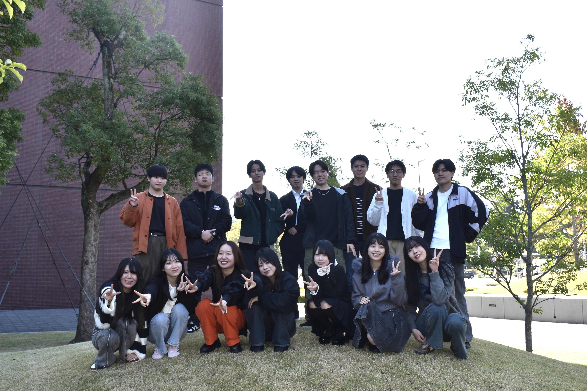

メンバー紹介
2026年度
2年生
| 稲吉 勇貴 | 基本情報技術者の資格取得をし、最後までしっかり頑張りたいです。 |
|---|---|
| 岩井 菜津紀 | 情報に関する知識をつけながら、プレゼンや研究を通して立派な人に成長できるように頑張りたいです。 |
| 大原 沙也 | 目標に向かってがんばります！ |
| 兼松 楓夏 | 自分の興味のあることについて一生懸命勉強していきたいです。あと資格取得も頑張りたいです。 |
| 清藤 未梨 | 全力で研究内容に最後まで取り組みます！ |
| 窪田 李音 | 自分の役割を模索しながら、できることにチャレンジしていきたいです！！！ |
| 小泉 まり | 一生懸命がんばります |
| 神山 紗良 | 毎日出席できるように頑張ります |
| 角 瑛人 | ゼミの仲間と協力し合いながら自分のやることをしっかり真面目にやって自分の研究を素晴らしいものにしたい。 |
| 西口 漣 | 知識はありませんが資格取得を目指して1から頑張りたいと思っています。 |
| 福手 ももこ | 様々なことに自分からチャレンジしていきたいです。 |
| 掘越 一花 | 資格取得やアプリ開発など実践的な活動を通して自分の力を伸ばしていきたいです。分からないことも積極的に挑戦しつつ、ゼミ生の皆さんとも仲良くなりたいです！ |
| 森下 結希愛 | 基本情報に合格できるように頑張ります |
| 山田 紅彩 | まずは資格勉強を頑張っていきたいです。友達もゼロからのスタートなので、ゼミでの交流に積極的に参加していきたいです。 |
| 15 | 15 |
2026年度
3年生

| 荒谷 侑里 | 【グループ研究テーマ】 先端情報処理研究 【アピールポイント】 グループでの活動が多いため周りからの刺激を受けて自己の成長に繋がる。 |
|---|---|
| 伊藤 汐音 | 【グループ研究テーマ】 Pepperによる社会貢献・課題解決プロジェクト 【アピールポイント】 ゼミ全体で風通しがよく、同級生や先輩方など他のゼミ生と接しやすいです。 |
| 大竹 奏徳 | 【グループ研究テーマ】 ビジネス情報コース広報 【アピールポイント】 研究内容(グループ研究もあるし、個人の研究もできることの幅が広い) |
| 緒方 衣音奈 | 【グループ研究テーマ】 先端情報処理研究 【アピールポイント】 グループワーク中心の活動で全体で仲がいい！ほかのゼミにはない学習領域！（AIなど） |
| 片田 幸大 | 【グループ研究テーマ】 ゼミWeb広報 【アピールポイント】 グループ活動を通して学年の仲を深められる |
| 川嶋 悠太郎 | 【グループ研究テーマ】 ビジネス情報コース広報 【アピールポイント】 伊勢神宮への参拝や合宿などのイベントが多いところ |
| 小島 白陽 | 【グループ研究テーマ】 アプリケーション開発 【アピールポイント】 発表の機会が多く、プレゼンテーション能力を高めることができます。 |
| 後藤 瑠那 | 【グループ研究テーマ】 先端情報処理研究 【アピールポイント】 イベントが充実していて、ゼミ生同士の交流が盛んなところ |
| 冨田 直人 | 【グループ研究テーマ】 アプリケーション開発 【アピールポイント】 定期的にパワポを用いた発表があるため、資料作成や発表の練習になる。 |
| 友利 ひなた | 【グループ研究テーマ】 ゼミWeb広報 【アピールポイント】 ゼミ内は非常に仲が良く、縦のつながりもあるところ！ |
| 西園 百合菜 | 【グループ研究テーマ】 Pepperによる社会貢献・課題解決プロジェクト 【アピールポイント】 資格勉強できる |
| 福井 若那 | 【グループ研究テーマ】 Pepperによる社会貢献・課題解決プロジェクト 【アピールポイント】 基本情報技術者などの資格の学習ができる点、また、お花見などの行事が多い点だと思います |
| 水野 奈央 | 【グループ研究テーマ】 アプリケーション開発 【アピールポイント】 ゼミ行事が多く、ゼミ生同士の仲が良いところです！みんなで楽しく協力しながら活動しています！ |
| 山下 瑠璃華 | 【グループ研究テーマ】 ビジネス情報コース広報 【アピールポイント】 グループでの活動があり、個人では学ぶことや挑戦することの出来ないものが出来るようになります |
| 山田 皐平 | 【グループ研究テーマ】 ゼミWeb広報 【アピールポイント】 グループワークやプレゼンを多く経験できる。 |
2026年度
4年生

| 岡本 万里奈 | 【卒業論文】 生成 AI による飲食店の業務効率化に関する研究 【アピールポイント】 活動が充実していて、ゼミ生同士での交流が多い！ |
|---|---|
| 尾関 陽斗 | 【卒業論文】 生成AI活用型アルゴリズム学習支援ツールの開発 【アピールポイント】 仲がいい・楽しい |
| 北口 もえ | 【卒業論文】 介護付き有料老人ホームにおける生成AIの活用に関する一考察 【アピールポイント】 ゼミ活動が活発なので、みんな仲良し |
| 小木曽 太一 | 【卒業論文】 音楽ライブにおけるAIの活用に関する一考察 【アピールポイント】 合宿をはじめとしたさまざまな行事があり、ゼミ生同士の交流を深めやすいです。 |
| 高田 鈴菜 | 【卒業論文】 独居高齢者支援に向けたAIの活用に関する一考察 【アピールポイント】 イベントがたくさんあり、ゼミ生の交流が多く、楽しい学生生活を送ることができます！ 明るく楽しい雰囲気のあるゼミです。 |
| 西川 日菜 | 【卒業論文】 推し活における生成AIの活用に関する考察 【アピールポイント】 合宿などの活動が活発な所 |
| 野口 颯翔 | 【卒業論文】 AIを活用した聴覚障がい者支援に関する研究 【アピールポイント】 ゼミの行事が多く、資格取得も目指すことができ、ゼミ生みんなで仲良く楽しめるところです。 |
| 服部 帆南 | 【卒業論文】 放課後児童クラブにおけるDX化に関する研究 【アピールポイント】 イベントが沢山あるため、学年関係なくゼミ生みんな仲良くなれます！ |
| 日沢 璃来 | 【卒業論文】 コンビニエンスストアにおけるAIの活用に関する一考察 【アピールポイント】 グループ研究や合宿などのイベントを通して、他者と協力する力を身につけることができます！ |
| 松浪 早紀 | 【卒業論文】 製造業の業務効率化に向けた生成AIの活用に関する研究 【アピールポイント】 仲間と協力し合い、切磋琢磨できる雰囲気が魅力です。 |
| 山田 王喜 | 【卒業論文】 SNSと連動した観光情報のリアルタイム化に関する研究 【アピールポイント】 考える力や協働力、プレゼンテーション能力が高まります。 ゼミ内での交流も活発でイベントがたくさんあるので楽しいです！ |
| 吉野 蓮斗 | 【卒業論文】 野球における審判業務の効率化に向けたアプリケーションの開発 【アピールポイント】 活動が多いこと |
| 米本 七海 | 【卒業論文】 保育園におけるDX化に関する一考察 【アピールポイント】 グループワークが多いところ！ |